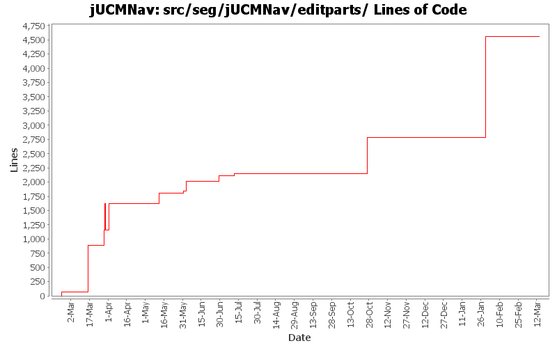

Summary Period: 2005-02-22 to 2006-03-13
[root]/src/seg/jUCMNav/editparts
 scenarioTreeEditparts
(0 files, 0 lines)
scenarioTreeEditparts
(0 files, 0 lines)
 strategyTreeEditparts
(6 files, 477 lines)
strategyTreeEditparts
(6 files, 477 lines)
 treeEditparts
(20 files, 1753 lines)
treeEditparts
(20 files, 1753 lines)

Total Lines Of Code:
4555 (2006-03-31 18:01)
| Author | Changes | Lines of Code | Lines per Change |
|---|---|---|---|
| Totals | 338 (100.0%) | 5026 (100.0%) | 14.8 |
| jfroy | 85 (25.1%) | 2406 (47.9%) | 28.3 |
| jmcmanus | 37 (10.9%) | 1105 (22.0%) | 29.8 |
| etremblay | 84 (24.9%) | 1071 (21.3%) | 12.7 |
| jkealey | 118 (34.9%) | 444 (8.8%) | 3.7 |
| jpdaigle | 14 (4.1%) | 0 (0.0%) | 0.0 |
Added extension point for the Strategy algorithms
0 lines of code changed in:
Fixed actor references labels (position and feedback)
0 lines of code changed in:
Externalize String
0 lines of code changed in:
Fix the URNlink to support multiple links type. Modification of the links display in UCM
0 lines of code changed in:
Added feedback in UCM for URNlinks
0 lines of code changed in:
Added URNlink dialog, actions and commands
0 lines of code changed in:
Name change for EvaluationScenario (now called Strategy)
0 lines of code changed in:
Added actor evaluation level.
Fixed bug when entering non integer for evaluation level
0 lines of code changed in:
Added:
-Delete commands for scenario and evaluation
-Delete action for evaluation
Fixed:
-NullPointer exception with scenarioView (in property view)
-Adding new elements in model when in scenario view
-Contribution and decomposition refresh
-Dispose labels in IntentionalElementEditPart and LinkRefEditPart
0 lines of code changed in:
looks like jfroy broke condition label hover feedback :)
0 lines of code changed in:
Added evaluation labels in evaluation scenario view.
0 lines of code changed in:
Added scenario author, color modification when scenario selected and fixed NullPointerException in Scenario view when closing the editor.
0 lines of code changed in:
Evaluation scenario view added.
0 lines of code changed in:
Fixed bugs 400, 401, 403 and 404
- Added GRL export as images
0 lines of code changed in:
Problem with the merge. Delete GRLConnectionOnBottomRootEditPart
0 lines of code changed in:
Fixed problem during the merge. Renamed file GrlConnectionOnBottomEditPart
62 lines of code changed in:
Merge of GRL branch with the main trunk
1705 lines of code changed in:
Created a URN Import extension point and related wizard. currently very simple, but sufficient for the use case to use case map conversion utility which will be packaged seperately.
Various other small modifications to import/export/autolayout extensions/wizards.
0 lines of code changed in:
Merge grl branch with the main trunk
Major modification of the metamodel (URN_08.mdl) (Added GRL metamodel, New interfaces that define common element in GRL and UCM, Modified UCM-Map package to implement the new interfaces (some associations and attributes have been refactored using the interfaces), Map is now called UCMmap (to resolve conflict with java.util.map in the implementation), Removed Path Graph)
Modification of the code that used the metamodel.
Started modification of jUCMNav to support GRL.
639 lines of code changed in:
* bug 363 - preference page for label colors
* also created preference page for autolayout.
* added our first extension point: UseCaseMapExport.
* Refactored existing export image and autolayout code to create three extensions
* Will have to rethink UI/extension point (or create a new one) to be able to export a URNspec
0 lines of code changed in:
(120 more)
Generated by StatCVS 0.2.4